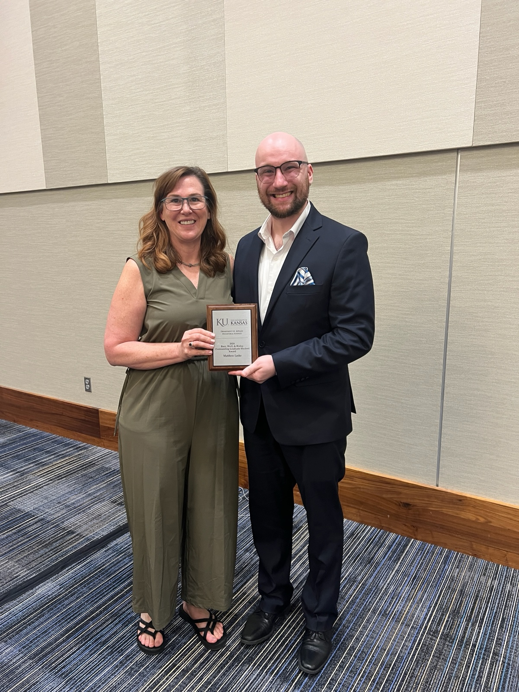
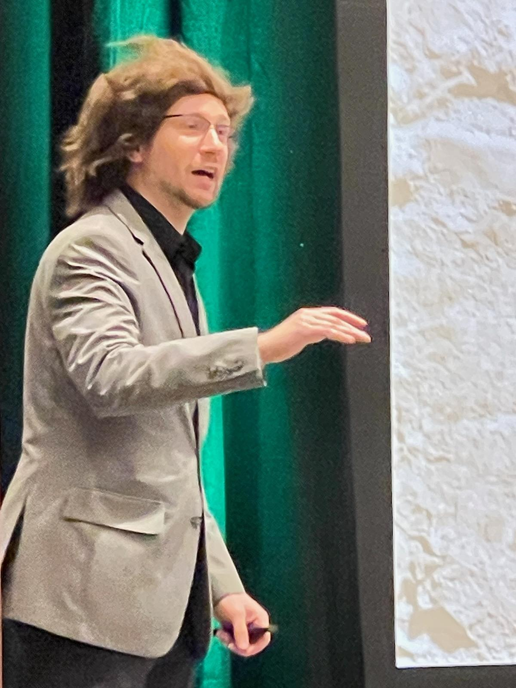
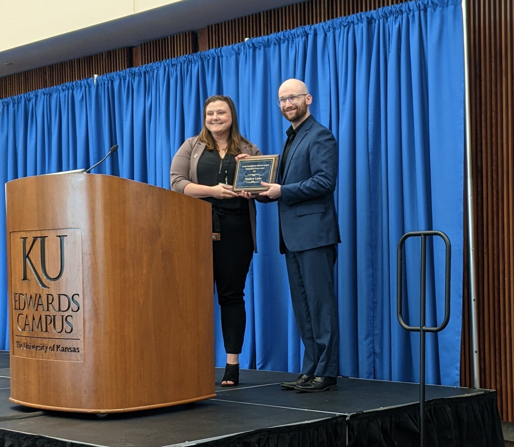
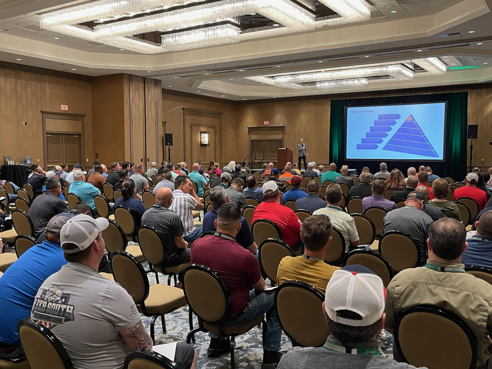
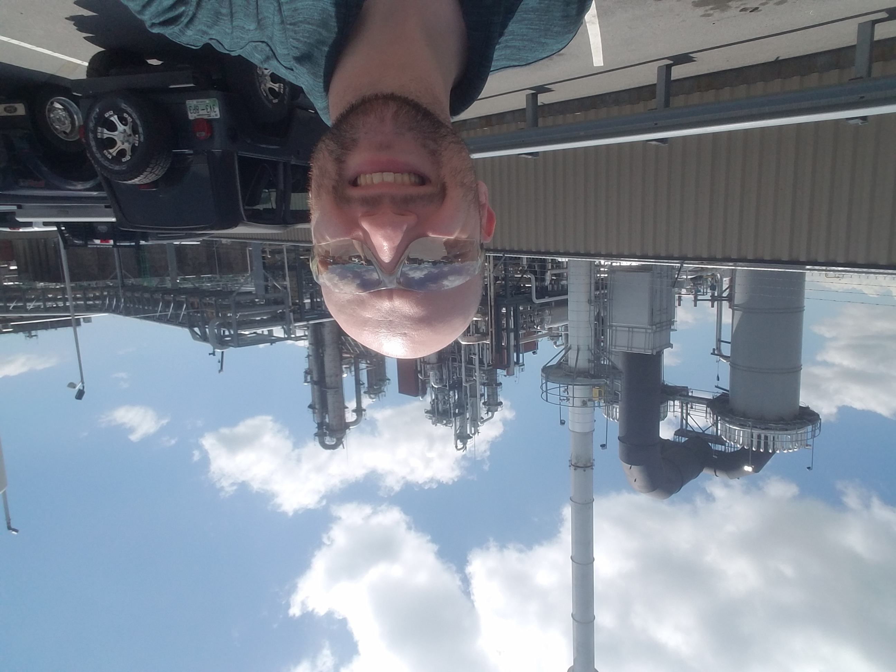
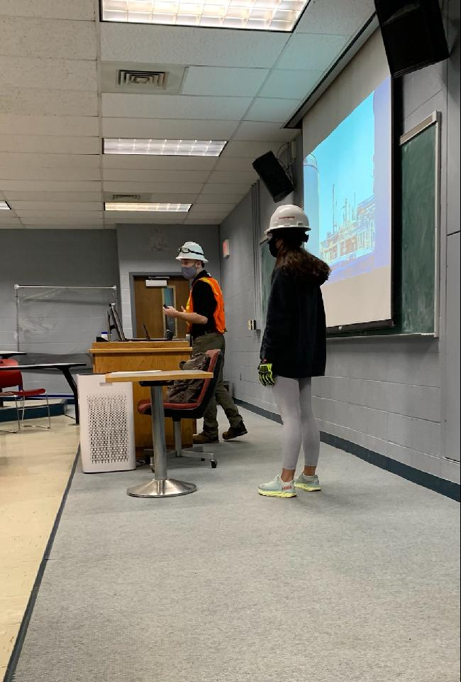

Researcher · Author · Speaker
Assistant Professor in the Department of Behavior Analysis at the University of North Texas and Director of the Organization and Communication Sciences Laboratory.
My research program centers on organizational behavior, communication sciences, and occupational safety. I have authored one book, nine peer-reviewed articles, and seven book chapters.
I was recognized as a 2025 Rising Star of Safety by the National Safety Council and received the inaugural Aubrey Daniels Outstanding Applied Intervention Award from the OBM Network.
Human Science for Good.
Featured Publication
This book presents the scientific principles and real-world best practices of behavioral safety — one of the most impactful applications of behavioral science to reduce injuries in industrial workplaces.
Timothy D. Ludwig & Matthew M. Laske (2023)
View PublicationPublications on communication, public speaking, organizational behavior, and workplace safety.
View All Publications




